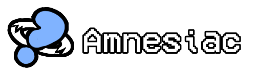
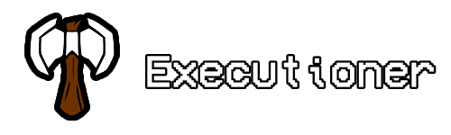
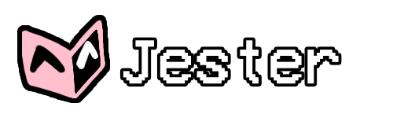

Can remember the role of a dead player and take on their goal.

Wins if their specific target is voted out.

Wins if their linked target survives to the end of the game.

Wins if they get voted out by the other players.